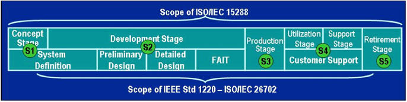

| Guideline: SE Leading Indicators Guide (PSM SE) |
 |
|
| Related Elements |
|---|
|
1. ABOUT THIS GUIDE
15 June 2007 Supersedes Beta Release, December 2005
This Systems Engineering Leading Indicators Guide is the result of a project initiated by the Lean Aerospace Initiative (LAI) Consortium in cooperation with the International Council on Systems Engineering (INCOSE), Practical Software and Systems Measurement (PSM), and Systems Engineering Advancement Research Initiative (SEARI). Leading measurement and systems engineering experts from government, industry, and academia volunteered their time to work on this initiative. This document is issued by INCOSE as document number INCOSE-TP-2005-001-02. Government and industry organizations are encouraged to tailor the information in this document for their purposes, and may incorporate this material into internal guidance documents. Please cite the original source and release version for traceability and baseline control purposes. Download the guide in PDF format: SE Leading Indicators Guide
Contributors: Contacts: LEADERSHIP TEAM
CORE TEAM
ADDITIONAL CONTRIBUTORS
Daniel Abbott Air Force David Card Q-Labs Bruce Evans Lockheed Martin Sheree Havlik Raytheon Tom Huynh Naval Postgraduate School Caroline Lamb Massachusetts Institute of Technology/LAI Student Jeff Loren SAF/AQRE William Miller Stevens Institute of Technology Darlene Utter Massachusetts Institute of Technology/LAI Student Mark Wilson Air Force Center for Systems Engineering Michael Winter Pratt & Whitney 2. EXECUTIVE SUMMARY Several policies calling for improved systems engineering on programs were released by DoD and the services during 20041. During this period, the Lean Aerospace Initiative (LAI) Consortium was tasked with assisting with the systems engineering revitalization activity. In June 2004, an Air Force/LAI Workshop on Systems Engineering for Robustness2 was held to establish the groundwork for several initiatives in support of systems engineering revitalization. One of these initiatives focused on leading indicators for evaluating the goodness of systems engineering on a program. In December 2005, the beta version of this document was released, describing the initial set of SE Leading Indicators. This initial set reflected the subset of possible candidate indicators that were considered to be the highest priority by the team, recognizing that the set was not exhaustive. In June 2007, this Version 1.0 document was released following the completion of a validation phase which included pilot applications of the leading indicators, a research study, various workshops, and an industry survey. Recommendations and further guidance on interpretation has been added based on results of the validation phase. Additional SE Leading Indicators will be added in future updates as these are identified, defined, and evolved.What are Leading Indicators? A leading indicator is a measure for evaluating the effectiveness of a how a specific activity is applied on a program in a manner that provides information about impacts that are likely to affect the system performance objectives. A leading indicator may be an individual measure, or collection of measures, that are predictive of future system performance before the performance is realized. Leading indicators aid leadership in delivering value to customers and end users, while assisting in taking interventions and actions to avoid rework and wasted effort. Who Developed the SE Leading Indicators? Subsequent to the June 2004 workshop, the “SE Leading Indicators Action Team” was formed under the auspices of LAI, comprised of engineering measurement experts from industry, government and academia, involving a collaborative partnership with INCOSE3 . Mr. Garry Roedler of Lockheed Martin and Dr. Donna Rhodes of MIT co-led the effort. Leading SE and measurement experts from LAI member companies, INCOSE, SSCI4, and PSM5 volunteered to serve on the team. The team held periodic meetings and used the ISO/IEC 15939 and PSM Information Model to define the indicators. To date, thirteen SE leading indicators have been developed, as summarized in Table 1. What Problem do SE Leading Indicators Address? To effectively manage programs, leaders need access to leading indicators. Leading indicators provide insight into potential future states to allow management to take action before problems are realized. While there are some leading indicators that cover the management aspects of program execution (e.g., earned value, etc.), we lack good leading indicators specifically for systems engineering activities. Who are the Primary Users of the Leading Indicators? The primary users are the program specific systems engineering leadership, program management, and IPT leadership who use the indicators to assess and make adjustments for assuring systems engineering effectiveness of the program. Selected indicators may also be used by the program customers, program partners, and program suppliers depending on phase of program and nature of the contractual relationship. Secondary users include executive and business area management, as well as process owners, for the purpose of predicting the overall effectiveness of systems engineering within and across a program, and for early detection of problems that require management attention. How do Leading Indicators Differ from Conventional SE Measures? Conventional measures provide status and historical information, while leading indicators use an approach that draws on trend information to allow for predictive analysis (forward looking). By analyzing the trends, predictions can be forecast on the outcomes of certain activities. Trends are analyzed for insight into both the entity being measured and potential impacts to other entities. This provides leaders with the data they need to make informed decisions and where necessary, take preventative or corrective action during the program in a proactive manner. While the leading indicators appear similar to existing measures and often use the same base information, the difference lies in how the information is gathered, evaluated, interpreted, and used to provide a forward looking perspective. How do SE Leading Indicators relate to Current Organizational SE Measurement Practices? Most organizations have an organizational measurement plan and a set of measures. These leading indicators are meant to augment the existing set of measures. For optimal efficiency these should be implemented via the organization’s measurement infrastructure (typically based on CMMI® practices), thereby enabling mechanized data gathering, analysis, and evaluation. It should also be noted that leading indicators involve use of empirical data to set planned targets and thresholds. Where organizations lack this data, expert opinion may be used as a proxy to establish initial targets and thresholds until a good historical base of information can be collected, but should not be relied on as a long term solution for measurement projections. Rather, organizations must build the collection of the historical measurement data into its collection practices. What is the Expected Impact? These leading indicators have been specifically selected to provide insight into key systems engineering activities across the phases of a program.
Figure 1 - The Defense Acquisition Management Framework Figure 1 - The Defense Acquisition Management Framework, depicts the United States Department of Defense (DoD) acquisition life cycle phases for a defense program. These phases were established and described by DoD Instruction 5000.2 and the associated Defense Acquisition Guidebook. This process is a continuum of activities for managing all defense acquisition programs. Appropriate tailoring of the detailed measurement information specifications may be needed to address the specific information needs of any given program. It should be noted that the leading indicators are also envisioned as suitable to commercial endeavors. 
Figure 2 - ISO/IEC 15288, IEEE 1220 and ISO/IEC 26702 Stages Figure 2 - ISO/IEC 15288, IEEE 1220 and ISO/IEC 26702 Stages, depict the same process and life cycle concepts in non-DoD terms. As demonstrated in Table 1, most of the leading indicators are trend measures that have broad applicability across both defense and commercial life cycle phases/stages. The DoD life cycle phases are denoted as P1 through P5 in Table 1 and are numbered as squares 1-5 in Figure 1. The industry standard life cycle stages are denoted as S1 through S5 in both Table 1 and Figure 2. What is an example of how leading indicators have contributed to effective systems engineering on a program? A good example of the positive impact of using leading indicators was demonstrated within one of the pilots of the beta release guide. By monitoring the requirements validation and volatility trends, the pilot program team was able to more effectively predict readiness for the System Requirements Review (SRR) milestone. Initially the program had selected a calendar date to conduct the SRR, but in subsequent planning made the decision to have the SRR be event driven, resulting in a new date for the review wherein there could be a successful review outcome. That is, the review date was set based on an acceptable level of requirements validation and volatility in accordance with the leading indicators. Had the original calendar date been used, it is likely that the SRR would not have been successful and would have had to be repeated. See example Requirements Volatility graphic in Section 3.1. Are the Leading Indicators Applicable to System of Systems Programs? The leading indicators have primarily been derived from experience on traditional systems engineering programs, however potential for use on System of Systems (SoS) programs has been given some consideration. First of all, some of the leading indicators are directly usable by a prime contractor as indicators for SoS level engineering activities. As SoS programs apply many of the same skills and perform many of the same activities as systems programs, the leading indicators do still apply. It is anticipated that in the SoS case, the interpretation of the leading indicators may involve some additional and/or unique considerations. For example how leading indicators, applied at the constituent systems level of a SoS, could be used effectively as a collected set of indicators and/or as aggregated indicators. How will the Leading Indicators be Further Validated? The further validation efforts will be monitored by the core team, in collaboration with the participating collaboration organizations. Based on results of the program use, leading indicators will be adjusted as required. Additionally, recommendations will be developed regarding which leading indicators are most effective for particular types of programs. What are the Plans for Improvement? In support of the continuing validation and refinement activity, industry and academic research is planned to analyze the effectiveness and adequacy of the measures in support of improved project performance. As lessons are learned in the continuing validation process, the core team will be providing briefings to and seeking input from selected government forums and systems engineering societies/associations. There are several activities planned for the future, including workshops on leading indicators involving cross discipline participation.
1 Policies include Policy for Systems Engineering in the DOD, 20 Feb 04; Assistant Secretary of the Air Force for Acquisition, Dr Sambur, 9 Apr 03, Policy Memo 03A-005 titled Incentivizing Contractors for Better Systems Engineering; Memo 04A-001 titled 2 Rhodes, D. Ed, Report on the AF/LAI Workshop on Systems Engineering for Robustness, July 2004, http://lean.mit.edu/ 3 INCOSE (International Council on Systems Engineering) is the leading professional society for systems engineering. INCOSE has developed guidance materials on systems engineering measures, and both editors of document have served as former chairs of the INCOSE Measurement Working Group. INCOSE is collaborating with LAI on this effort, and is targeted as the long term owner for guidance developed under this LAI project. 4 SSCI (Systems and Software Consortium Inc.) is collaborating with LAI on systems engineering initiatives. 5 PSM (Practice Software and Systems Measurement) has developed foundational work on measurements under government funding. The LAI effort is using formats developed by PSM for documenting of the leading indicators.
3 LEADING INDICATOR DESCRIPTIONS The following subsections provide a very brief description of the leading indicators, along with the leading insight provided by this indicator. The detailed description for each of the indicators is provided in Section 4, where each leading indicator has an associated information measurement description. For each leading indicator in Section 3, the reader should refer to the associated information in Section 4 in order to fully understand the leading indicator. The format of the leading indicators information has been developed to be consistent with widely accepted measurement guidance in use in systems engineering and software organizations to include the references listed in Section 5. Important Note: The graphics in this document are intended for basic ilustrative purpose only, and may represent only one aspect of the overal indicator. These are prototype graphs and do not contain actual data. It is expected each organization wil develop its own format for graphics. Underlying the information in the graphs, an organization will need to investigate root causes and related information to fully understand what is being flagged by the indicator.
3.1. Requirements Trend 3.2. System Definition Change Backlog Trends 3.3. Interface Trends 3.4. Requirements Validation Trends 3.5. Requirements Verification Trends 3.6. Work Product Approval Trends 3.7. Review Action Closure Trends 3.8. Technology Maturity Trends 3.9. Risk Exposure Trends 3.10. Risk Handling Trends 3.11. Systems Engineering Staffing and Skills Trends 3.12. Process Compliance Trends 3.13. Technical Measurement Trends
4 INFORMATION MEASUREMENT SPECIFICATION The following subsections provide the details of the leading indicators. The brief description for each of the indicators is provided in Section 3. For each leading indicator, the reader will find the associated information in order to fully understand the leading indicator. The format of each leading indicator specification is provided in Template: Measurement Information Specification (PSM).
4.1. Information Measurement Specification: Requirements Trends 4.2. Information Measurement Specification: System Definition Change Backlog Trends 4.3. Information Measurement Specification: Interface Trends 4.4. Information Measurement Specification: Requirements Validation Trends 4.5. Information Measurement Specification: Requirements Verification Trends 4.6. Information Measurement Specification: Work Product Approval Trends 4.7. Information Measurement Specification: Review Action Item Closure Trends 4.8. Information Measurement Specification: Technology Maturity Trends 4.9. Information Measurement Specification: Risk Exposure Trends 4.10. Information Measurement Specification: Risk Handling Trends 4.11. Information Measurement Specification: Systems Engineering Staffing and Skills Trends 4.12. Information Measurement Specification: Process Compliance Trends 4.13. Information Measurement Specification: Technical Measurement Trends
5 REFERENCES |
||||||||||||||||||||||||||||||||||||||||||||||||||||||||||||||||||||||||||||||||||||||||||||||||||||||||||||||||||||||||||||||||||||||||||||||||||||||||||||||||||||||||||||||||||||||||||||||||||||||||||||||||||||||||||||||||||||||||||||||||||||||

| Copyright © 2007 by LAI, INCOSE, PSM, and LEARI (Systems Leading Indicators Guide Copyright) |